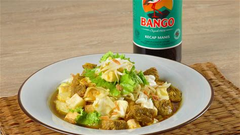

Resep Tahu Campur Khas Banyuwangi

Tahu campur adalah makanan khas Banyuwangi yang terdiri dari potongan tahu goreng yang disajikan dengan lontong, tauge, selada, dan irisan daging sapi.
Semua bahan tersebut kemudian disiram dengan kuah petis yang gurih dan pedas.
Rasanya yang lezat dan segar membuat tahu campur menjadi salah satu makanan favorit di Banyuwangi.
Bahan-Bahan Tahu Campur
- 200 gram tahu putih (potong dadu dan goreng)
- 100 gram lontong (potong dadu)
- 100 gram tauge (seduh dengan air panas)
- 50 gram selada (iris tipis)
- 100 gram daging sapi (rebus dan iris tipis)
- 2 siung bawang putih (haluskan)
- 5 butir bawang merah (haluskan)
- 2 sendok makan petis udang
- 500 ml air kaldu sapi
- 1 sendok makan kecap manis
- 1 sendok teh garam (sesuai selera)
- 1 sendok teh gula merah (serut)
- 2 buah cabai merah (iris terong)